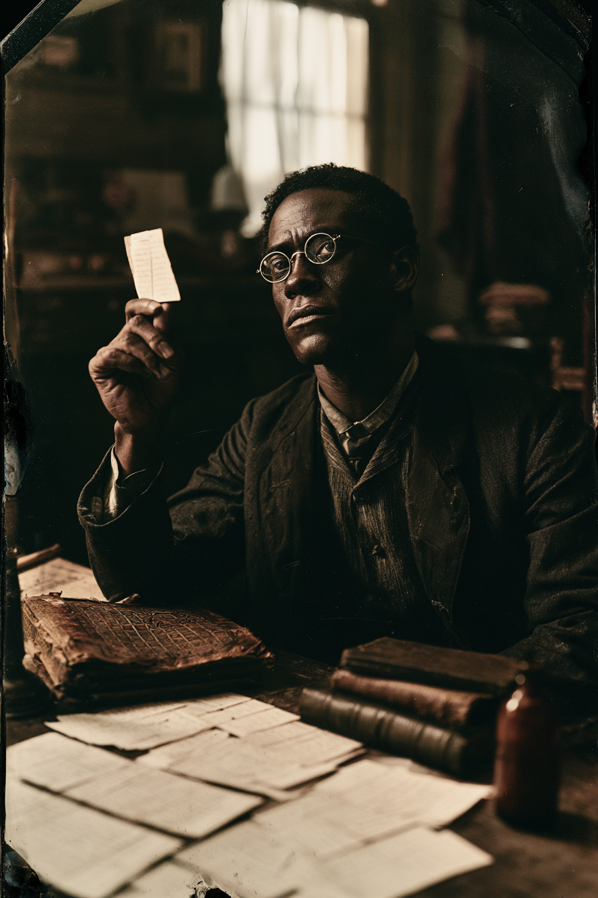

Archetyp: HUCKSTER (Taschenspieler)
Er knackte die Chiffre in elf Monaten. Die vier Jahre seither versucht er, sie wieder zu ver-lernen.
| Agility | d4 | 0 |
| Smarts | d10 | 3 |
| Spirit | d6 | 1 |
| Strength | d4 | 0 |
| Vigor | d6 | 1 |
| Skill | Attr. | Die | Pts. |
|---|---|---|---|
| Spellcasting | Sma | d8 | 3 |
| Occult | Sma | d8 | 3 |
| Research | Sma | d8 | 3 |
| Gambling | Sma | d6 | 2 |
| Notice | Sma | d6 | 1 |
| Weapon | Range | Damage | AP | RoF | Wt. | Cost |
|---|---|---|---|---|---|---|
| Abgesägte Doppelläufige (12) | 5/10/20 | 1–3W6 | – | 1 | 3 | $35 |
| 2 Schuss, +2 Schießen, nie auf ein Lebewesen abgefeuert · Mindeststärke W4 genau erfüllt | ||||||
| Geschoss (Bolt) | 12/24/48 | 2W6 | – | 1 | – | – |
| 1 MP je Schuss, Zaubern W8, 15 MP = fünfzehn Karten | ||||||
Machtpunkte: 15 statt 10 · Geschoss für 1 MP macht ihn zur nachhaltigen Feuerkraft
Night Terrors: –1 auf alle Geist-Proben, und er hält jeden in Hörweite wach
Hintergrund. Teague ging auf Subskription seiner Kirchengemeinde nach Oberlin, unterrichtete Mathematik an einer Freedmen’s-Bureau-Schule in Helena, Arkansas, und verbrachte die Kriegsjahre als Chiffrierschreiber, der erbeutete Depeschen für einen Unionsoberst übersetzte, dem gefiel, dass er still und gründlich war. ’80 kam eine Kiste „unknackbaren“ Materials von Rock Island, und ganz unten lag ein wasserfleckiger Hoyle’s Book of Games von 1769, gekennzeichnet als vermuteter konföderierter Codeschlüssel. Das war er nicht. Teague knackte ihn trotzdem — zuerst die Bridge-Diagramme, dann die Zahlenfolge in den Musterblättern — und in der Nacht, in der er fertig wurde, sagte etwas auf der anderen Seite der Seite seinen Namen zurück. Korrekt. Einschließlich des zweiten Vornamens, den seine Mutter ihm gab und nie jemandem nannte. Er hat seither keine Nacht durchgeschlafen.
Build. Geschicklichkeit W4, Verstand W10, Geist W6, Stärke W4, Konstitution W6 · Parade 2, Robustheit 5 Zaubern W8, Okkultismus W8 (mit Gelehrter W8+2), Nachforschen W8, Glücksspiel W6, Bemerken W6 — kein Schießen, absichtlich: er trägt eine Schrotflinte und trifft damit kein Scheunentor. Talente: Arcane Background (Huckster), Power Points (Machtpunkte — 15 MP statt 10), Scholar (Gelehrter, Okkultismus) Handicaps: Night Terrors (Nachtängste) — Major: −1 auf alle Geist-Proben, und er hält jeden in Hörweite wach · Talisman — Minor: sein eigener annotierter Hoyle, die Ränder dicht mit seiner Chiffrier-Notation; ohne ihn in der Hand −1 auf alle Zaubern-Proben, zwei Spielwochen zum Einarbeiten eines Ersatzes · Habit — Minor: Laudanum, das Einzige, womit er überhaupt schläft, und er rationiert schlecht Mächte (15 MP): Geschoss (1 MP), Schutz, Arkanes entdecken/verbergen — Trappings: steife Pappkarten in seiner eigenen Handschrift, mit Tusche liniert und beschriftet. Das Geschoss ist eine einzelne hochkant geworfene Karte, und sie kommt hinterher zu ihm zurück. Warm. Ausrüstung: der annotierte Hoyle, abgesägte Doppelflinte (nie auf ein Lebewesen abgefeuert), Brille, Laterne, Schreibzeug und drei gebundene Notizbücher, ein Maultier namens Fermat, ein kleines braunes Fläschchen.
Die Nische. Teague ist die Anti-Cordelia: 15 Machtpunkte, Geschoss für 1 MP pro Schuss und ein W8 in der arkanen Fertigkeit — er wirft fünfzehn Geschosse an einem Nachmittag, ohne je einen Benny auszugeben. Er ist die nachhaltige Feuerkraft der Posse und zugleich ihre Bibliothek: Okkultismus W8+2 identifiziert das Wesen und seine Schwäche, bevor es jemand teuer lernen muss. Er geht genau einmal pro Sitzung einen Teufelspakt ein, wenn jemand zu sterben droht, und er wird es hassen.
Aufhänger. Der Manitu hat sich nie einen Namen gegeben. Er spricht ausschließlich in Teagues eigener Stimme und nur über Dinge, die Teague bereits weiß — den Mädchennamen seiner Mutter, den genauen Wortlaut eines Briefs, den er verbrannt hat, die Zahl der Kinder in seiner Klasse in Helena und welche zwei davon starben. Er versucht ihn nicht zu verführen. Er prüft ihn. Für jeden Pakt nimmt er Zahlung nicht in Seele, sondern in Genauigkeit: er gibt ihm eine weitere wahre Tatsache zurück, die Teague nicht wollte. Inzwischen ahnt Teague, dass die Rechnung in beide Richtungen läuft — dass etwas in seinen Notizbüchern von der Gegenpartei geschrieben wird, und dass die vier Jahre Randnotizen, auf denen seine ganze sichere Praxis beruht, eine zweite Chiffre sind, adressiert an jemanden, der noch nicht geboren ist. Sein Talisman ist damit zugleich seine Krücke und womöglich die Falle. Der beste Zug des Marshals: jemand bietet an, ihm das Buch abzukaufen.
Warum es Spaß macht. Du bist der Vorsichtige — der Spieler, der das Regelwerk liest, die Rückschlagstabelle prüft und ausrechnet, ob die Quote einen Benny wert ist — und das Spiel baut ständig Situationen, in denen Vorsicht nicht reicht und du dich an den Tisch setzen musst, dem du abgeschworen hast.
Regelgrundlage: Regelnotizen · Archetyp-Notizen